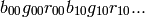
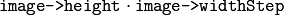

Basic Structures¶
CvPoint¶
2D point with integer coordinates (usually zero-based).
typedef struct CvPoint { int x; int y; } CvPoint;
| param x: | x-coordinate |
|---|---|
| param y: | y-coordinate /* Constructor */
inline CvPoint cvPoint( int x, int y );
/* Conversion from CvPoint2D32f */
inline CvPoint cvPointFrom32f( CvPoint2D32f point );
|
CvPoint2D32f¶
2D point with floating-point coordinates
typedef struct CvPoint2D32f { float x; float y; } CvPoint2D32f;
| param x: | x-coordinate |
|---|---|
| param y: | y-coordinate /* Constructor */
inline CvPoint2D32f cvPoint2D32f( double x, double y );
/* Conversion from CvPoint */
inline CvPoint2D32f cvPointTo32f( CvPoint point );
|
CvPoint3D32f¶
3D point with floating-point coordinates
typedef struct CvPoint3D32f { float x; float y; float z; } CvPoint3D32f;
| param x: | x-coordinate |
|---|---|
| param y: | y-coordinate |
| param z: | z-coordinate /* Constructor */
inline CvPoint3D32f cvPoint3D32f( double x, double y, double z );
|
CvPoint2D64f¶
2D point with double precision floating-point coordinates
typedef struct CvPoint2D64f { double x; double y; } CvPoint2D64f;
| param x: | x-coordinate |
|---|---|
| param y: | y-coordinate /* Constructor */
inline CvPoint2D64f cvPoint2D64f( double x, double y );
/* Conversion from CvPoint */
inline CvPoint2D64f cvPointTo64f( CvPoint point );
|
CvPoint3D64f¶
3D point with double precision floating-point coordinates
typedef struct CvPoint3D64f { double x; double y; double z; } CvPoint3D64f;
| param x: | x-coordinate |
|---|---|
| param y: | y-coordinate |
| param z: | z-coordinate /* Constructor */
inline CvPoint3D64f cvPoint3D64f( double x, double y, double z );
|
CvSize¶
Pixel-accurate size of a rectangle.Size of a rectangle, represented as a tuple(width, height), where width and height are integers.CvSize2D32fSub-pixel accurate size of a rectangle.Size of a rectangle, represented as a tuple(width, height), where width and height are floats.CvRectOffset (usually the top-left corner) and size of a rectangle.
typedef struct CvRect { int x; int y; int width; int height; } CvRect;
| param x: | x-coordinate of the top-left corner |
|---|---|
| param y: | y-coordinate of the top-left corner (bottom-left for Windows bitmaps) |
| param width: | Width of the rectangle |
| param height: | Height of the rectangle /* Constructor */
inline CvRect cvRect( int x, int y, int width, int height );
|
CvScalar¶
A container for 1-,2-,3- or 4-tuples of doubles.CvScalar is always represented as a 4-tuple.
>>> import cv >>> cv.Scalar(1, 2, 3, 4) (1.0, 2.0, 3.0, 4.0) >>> cv.ScalarAll(7) (7.0, 7.0, 7.0, 7.0) >>> cv.RealScalar(7) (7.0, 0.0, 0.0, 0.0) >>> cv.RGB(0.1, 0.2, 0.3) (0.29999999999999999, 0.20000000000000001, 0.10000000000000001, 0.0)
CvTermCriteria¶
_
:param : __````__````____ :param _: :param :
Termination criteria for iterative algorithms.Represented by a tuple(type, maxiter, epsilon).CVTERMCRITITER,CVTERMCRITEPSorCVTERMCRITITER | CVTERMCRITEPStypeMaximum number of iterationsmaxiterRequired accuracyepsilonCvMatA multi-channel matrix.
typedef struct CvMat { int type; int step; int* refcount; union { uchar* ptr; short* s; int* i; float* fl; double* db; } data; #ifdef __cplusplus union { int rows; int height; }; union { int cols; int width; }; #else int rows; int cols; #endif } CvMat;
| param type: | A CvMat signature (CV_MAT_MAGIC_VAL) containing the type of elements and flags |
|---|---|
| param step: | Full row length in bytes |
| param refcount: | Underlying data reference counter |
| param data: | Pointers to the actual matrix data |
| param rows: | Number of rows |
| param cols: | Number of columns |
Matrices are stored row by row. All of the rows are aligned by 4 bytes.
CvMatND¶
Multi-dimensional dense multi-channel array.
typedef struct CvMatND { int type; int dims; int* refcount; union { uchar* ptr; short* s; int* i; float* fl; double* db; } data; struct { int size; int step; } dim[CV_MAX_DIM]; } CvMatND;
| param type: | A CvMatND signature (CV_MATND_MAGIC_VAL), combining the type of elements and flags |
|---|---|
| param dims: | The number of array dimensions |
| param refcount: | Underlying data reference counter |
| param data: | Pointers to the actual matrix data |
| param dim: | For each dimension, the pair (number of elements, distance between elements in bytes) |
CvSparseMat¶
Multi-dimensional sparse multi-channel array.
typedef struct CvSparseMat { int type; int dims; int* refcount; struct CvSet* heap; void** hashtable; int hashsize; int total; int valoffset; int idxoffset; int size[CV_MAX_DIM]; } CvSparseMat;
| param type: | A CvSparseMat signature (CV_SPARSE_MAT_MAGIC_VAL), combining the type of elements and flags. |
|---|---|
| param dims: | Number of dimensions |
| param refcount: | Underlying reference counter. Not used. |
| param heap: | A pool of hash table nodes |
| param hashtable: | |
| The hash table. Each entry is a list of nodes. | |
| param hashsize: | Size of the hash table |
| param total: | Total number of sparse array nodes |
| param valoffset: | |
| The value offset of the array nodes, in bytes | |
| param idxoffset: | |
| The index offset of the array nodes, in bytes | |
| param size: | Array of dimension sizes |
IplImage¶
IPL image header
typedef struct _IplImage { int nSize; int ID; int nChannels; int alphaChannel; int depth; char colorModel[4]; char channelSeq[4]; int dataOrder; int origin; int align; int width; int height; struct _IplROI *roi; struct _IplImage *maskROI; void *imageId; struct _IplTileInfo *tileInfo; int imageSize; char *imageData; int widthStep; int BorderMode[4]; int BorderConst[4]; char *imageDataOrigin; } IplImage;
| param nSize: | sizeof(IplImage) |
|---|---|
| param ID: | Version, always equals 0 |
| param nChannels: | |
Number of channels. Most OpenCV functions support 1-4 channels. |
|
| param alphaChannel: | |
Ignored by OpenCV |
|
| param depth: | Pixel depth in bits. The supported depths are:
|
| param colorModel: | |
Ignored by OpenCV. The OpenCV function CvtColor requires the source and destination color spaces as parameters. |
|
| param channelSeq: | |
Ignored by OpenCV |
|
| param dataOrder: | |
0 = IPL_DATA_ORDER_PIXEL - interleaved color channels, 1 - separate color channels. CreateImage only creates images with interleaved channels. For example, the usual layout of a color image is:  |
|
| param origin: | 0 - top-left origin, 1 - bottom-left origin (Windows bitmap style) |
| param align: | Alignment of image rows (4 or 8). OpenCV ignores this and uses widthStep instead. |
| param width: | Image width in pixels |
| param height: | Image height in pixels |
| param roi: | Region Of Interest (ROI). If not NULL, only this image region will be processed. |
| param maskROI: | Must be NULL in OpenCV |
| param imageId: | Must be NULL in OpenCV |
| param tileInfo: | Must be NULL in OpenCV |
| param imageSize: | |
Image data size in bytes. For interleaved data, this equals  |
|
| param imageData: | |
A pointer to the aligned image data |
|
| param widthStep: | |
The size of an aligned image row, in bytes |
|
| param BorderMode: | |
Border completion mode, ignored by OpenCV |
|
| param BorderConst: | |
Border completion mode, ignored by OpenCV |
|
| param imageDataOrigin: | |
A pointer to the origin of the image data (not necessarily aligned). This is used for image deallocation. |
|
The IplImage structure was inherited from the Intel Image Processing Library, in which the format is native. OpenCV only supports a subset of possible IplImage formats, as outlined in the parameter list above.
In addition to the above restrictions, OpenCV handles ROIs differently. OpenCV functions require that the image size or ROI size of all source and destination images match exactly. On the other hand, the Intel Image Processing Library processes the area of intersection between the source and destination images (or ROIs), allowing them to vary independently.
CvArr¶
Arbitrary array
typedef void CvArr;
The metatype CvArr is used only as a function parameter to specify that the function accepts arrays of multiple types, such as IplImage*, CvMat* or even CvSeq* sometimes. The particular array type is determined at runtime by analyzing the first 4 bytes of the header.
Help and Feedback
You did not find what you were looking for?- Try the FAQ.
- Ask a question in the user group/mailing list.
- If you think something is missing or wrong in the documentation, please file a bug report.